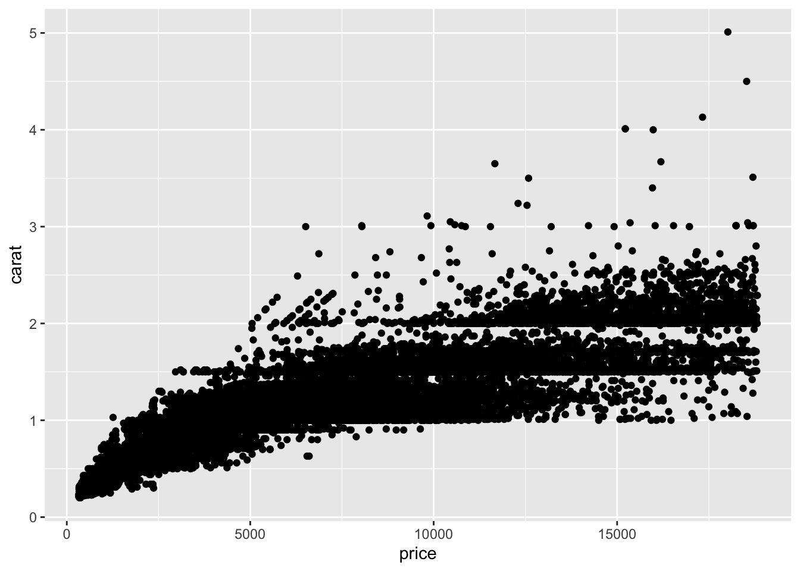

8 Lab - R Markdown and R Projects
Required reading
- Taback, Nathan, 2019, ‘R Markdown for Class Reports’, freely availabel at: https://scidesign.github.io/Rmarkdownforclassreports.html.
- Wickham, Hadley, and Garrett Grolemund, 2017, ‘R for Data Science’, Chapter 27, freely available at: https://r4ds.had.co.nz/.
- Wilson, Greg, Jennifer Bryan, Karen Cranston, Justin Kitzes, Lex Nederbragt, Tracy K. Teal, 2017, ‘Good enough practices in scientific computing’, PLoS Computational Biology, 13(6).
Recommended reading
- Chan, Martin, 2020, ‘RStudio Projects and Working Directories: A Beginner’s Guide’, freely available at: https://martinctc.github.io/blog/rstudio-projects-and-working-directories-a-beginner's-guide/.
- Peek, Ryan, 2020, ‘10 tips to souping up rmarkdown’, 20 February, freely available at: https://ryanpeek.github.io/2020-02-20-10-tips-to-souping-up-rmarkdown/#S8.
- Soetewey, Antoine, 2020, ‘Getting started in R markdown’, 18 February, freely available at: https://www.statsandr.com/blog/getting-started-in-r-markdown/.
8.1 R Markdown
8.1.1 Getting started
R Markdown is a mark-up language similar to html or LaTeX, in comparison to a WYSIWYG language, such as Word. This means that all of the aspects are consistent, for instance, all ‘main headings’ will look the same. However it means that use symbols to designate how you would like certain aspects to appear, and it is only when you compile it that you get to see it.
R Markdown is a variant of regular markdown that is specifically designed to allow R code chunks to be included. The advantage is that you can get a ‘live’ document in which code executes and is then printed to a document. The disadvantage is that it can take a while for the document to compile because all of the code needs to run.
You can create a new R Markdown document within R Studio (File -> New File -> R Markdown Document). Another advantage of R Markdown is that very similar code can compile into a variety of documents, including html pages and PDFs. R Markdown also has default options set up for including a title, author, and date sections.
8.1.2 Basic commands
If you ever need a reminder of the basics of R Markdown then this is built into R Studio (Help -> Markdown Quick Reference). This provides the code for commonly needed commands:
- Emphasis:
*italic*, **bold**, _italic_, __bold__ - Headers (these need to go on their own line with a line before and after):
# Header 1, ## Header 2, ### Header 3 - Lists:
Unordered List
* Item 1
* Item 2
+ Item 2a
+ Item 2b
Ordered List
1. Item 1
2. Item 2
3. Item 3
+ Item 3a
+ Item 3b- URLs: Can just include an address: http://example.com, or can include a
[linked phrase](http://example.com). - Basic images can just be included either from the internet:
or from a local file:.
In order to create an actual document, once you have these pieces set up, click ‘Knit’.
8.1.3 R chunks
You can include R (and a bunch of other languages) code in code chunks within your R Markdown document. Then when you knit your document, the R code will run and be included in your document.
To create an R chunk start with three backticks and then within curly braces tell markdown that this is an R chunk. Anything inside this chunk will be considered R code and run as such.

There are various evaluation options that are available in chunks. You include these by putting a comma after r and then specifying any options before the closing curly brace. Helpful options include:
echo = FALSE: run the code and include the output, but don’t print the code in the document.include = FALSE: run the code but don’t output anything and don’t print the code in the document.eval = FALSE: don’t run the code, and hence don’t include the outpus, but do print the code in the document.
8.1.4 Abstracts and PDF outputs
In the default header, you can add a section for a header, so that it would look like this:
---
title: My document
author: Rohan Alexander
date: 25 February 2020
output: html_document
abstract: "This is my abstract."
---Similarly, you can change the output from html_document to pdf_document in order to produce a PDF. This uses LaTeX in the background so you may need to install a bunch of related packages.
8.2 R projects
RStudio has the option of creating a project, which allows you to keep all the files (data, analysis, report etc) associated with a particular project together. To create a project, click Click File > New Project, then select empty project, name your project and think about where you want to save it. For example, if you are creating a project for Problem Set 2, you might call it ps2 and save it in a sub-folder called PS2 in your INF2178 folder.
Once you have created a project, a new file with the extension .RProj will appear in that file. As an example, download the R help folder. Whenever I work on class materials, I open the project file and work from that.
The main advantage of projects is that you don’t have to set the working directory or type the whole file path to read in a file (for example, a data file). So instead of reading a csv from "~/Documents/toronto/teaching/INF2178/data/" you can just read it in from data/.